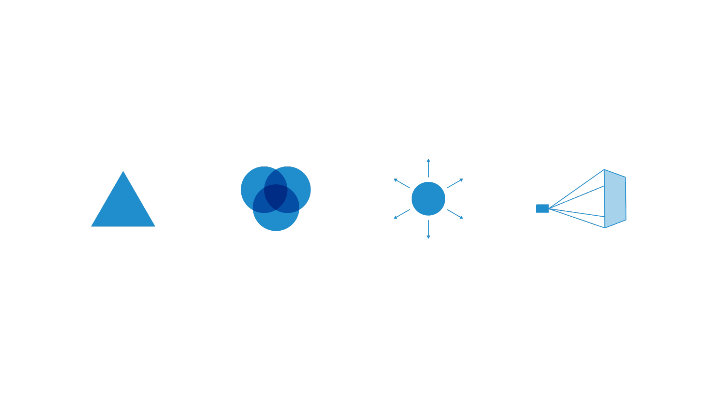
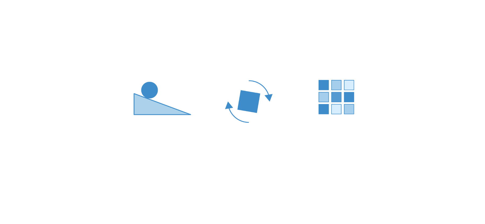
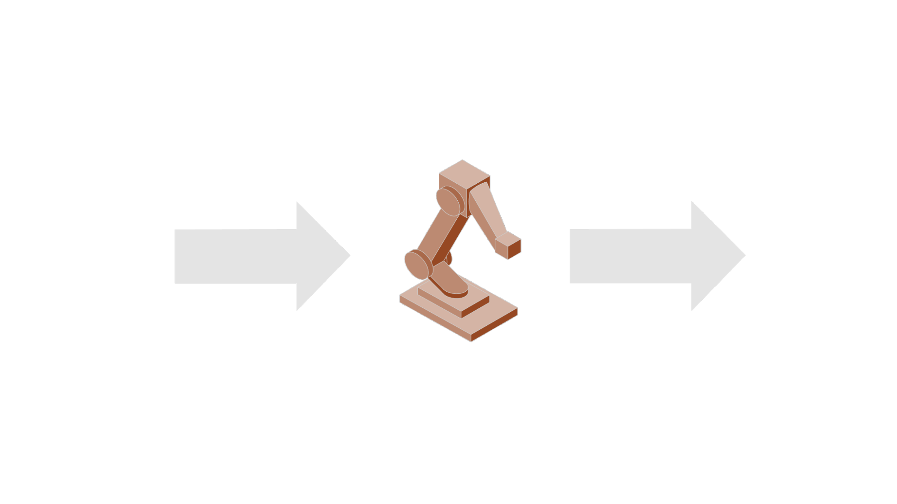
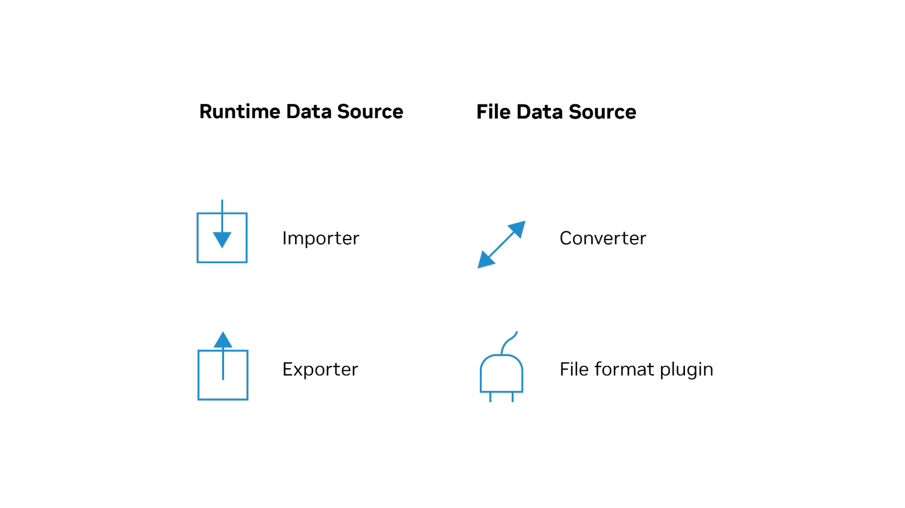
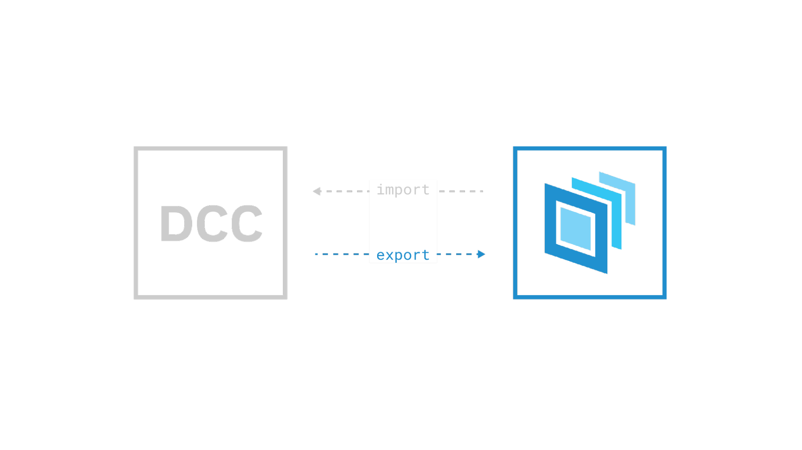
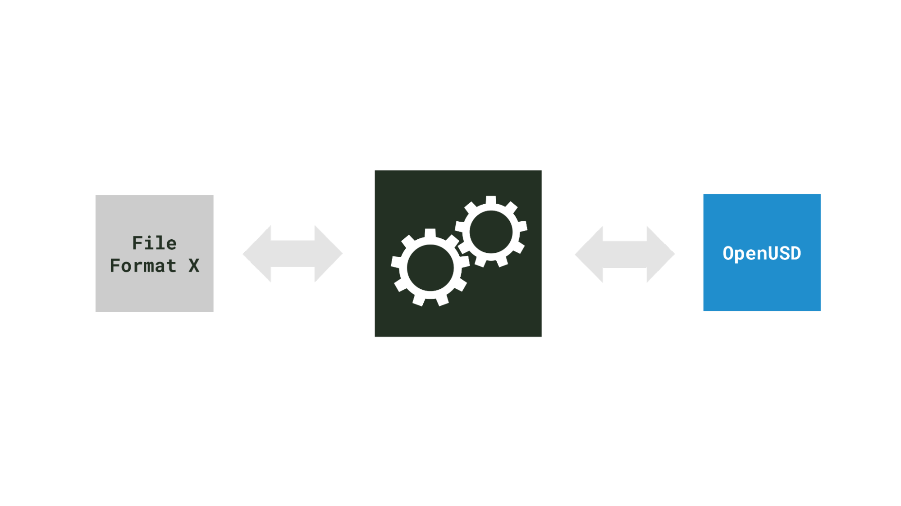
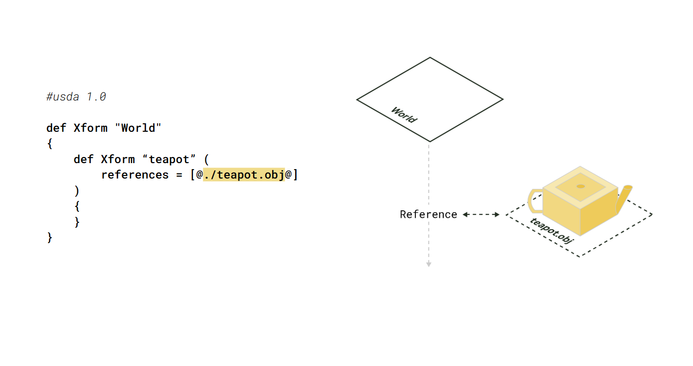
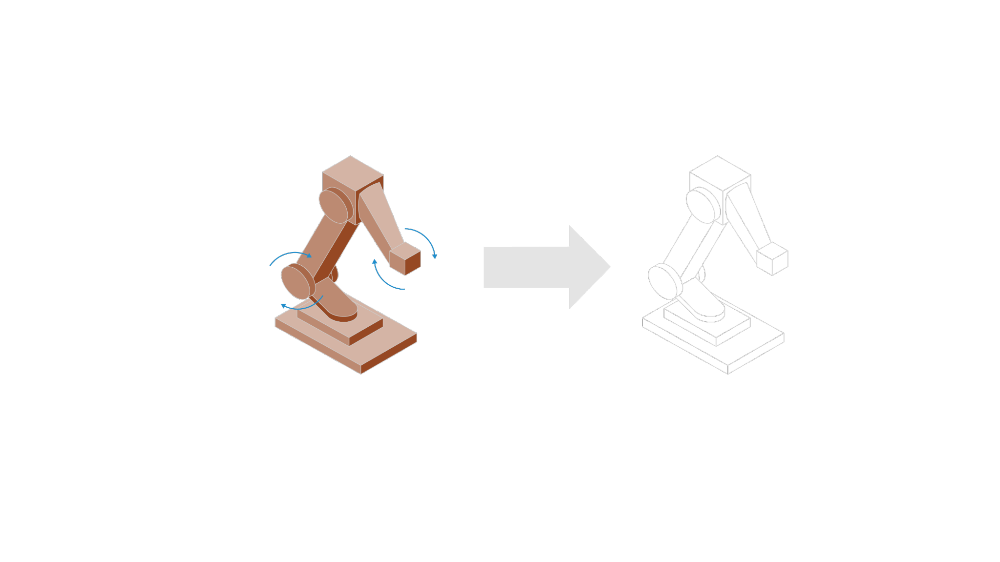
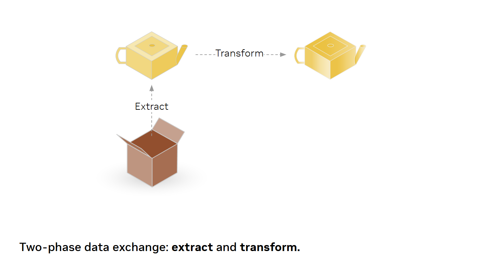

What Is Data Exchange?#
Brief Review: What Is OpenUSD?#
Before we get started with the lesson, let’s briefly review what OpenUSD is, and how it relates to data interoperability and data exchange.
OpenUSD is commonly referred to as USD, which stands for Universal Scene Description. What makes OpenUSD universal?
OpenUSD was developed by Pixar Animation Studios to address the complex 3D workflow challenges common in assembling and animating virtual worlds, where dozens of studios and specialties have to come together and collaborate on a single 3D scene.

To solve these problems, Pixar built USD with a core set of schemas to effectively describe 3D scenes, including meshes, materials, lights, and cameras. These data models describe many of the elements you would need to be able to make a 3D scene, such as those seen in an animated film, and have been used successfully by many studios as a common interchange format to pass the data between applications.

It gets better. OpenUSD can also be extended with new schemas to describe the data models for any domain including physics, robotics, synthetic data generation, and more.
OpenUSD was designed to be able to interchange data between digital content creation software. First for media and entertainment, but now for all industries.
What Do We Mean by Data Exchange?#

When we talk about OpenUSD data exchange, we’re asking, “How do I get my data into USD?” and “How do I get my data out of USD?”. We may want it out in the same format it came in, or we may want it in a different format. For example, we could import an STL asset and export it to glTF.
We also want to discuss what kinds of implementations exist or can be developed for translating between OpenUSD and other data formats.
Lastly, effective data mapping must be part of that conversation. For example, we could model a neural radiance field (NeRF) as a polygonal mesh in USD. Is that the best way to encode our NeRF? Probably not, so we should discuss these issues if and when they arise and see if we should develop a better way to model our data in USD.

There are four common implementations for adding OpenUSD support for your data format or application:
Importers
Exporters
Standalone converters
File format plugins
At a high-level, whether your data is represented as a file format or runtime format may dictate the type of implementation, but there are other factors to consider as well.
Importers and Exporters#
You may have experienced an importer or exporter in the past via File > Import or File > Export menus.
To clarify inputs and outputs for our purposes:
Importers translate data from OpenUSD to the runtime format of the application.
Exporters translate data from the runtime format of the application to OpenUSD.

These are implemented as a part of a digital content creation (DCC) application for translating to and from the application’s runtime format.
Depending on the application, it might be a native feature of the application or implemented as a plugin. Plugins might take the form of first-party or third-party development.
Standalone Converters#
A standalone converter is a script, executable or microservice dedicated to translating to and from another file format.

Unlike importers and exporters that have a clear translation directionality, a converter could be one-way or two-way. It’s important for developers to document what their converter does.
File Format Plugins#
File format plugins are a unique feature of OpenUSD. They allow OpenUSD to compose with additional file formats and even non-file-based sources, such as databases and procedurally generated content. Here are some key points about file format plugins:
An OpenUSD stage can include a source file format directly as a reference, payload or sublayer. The source file format is translated on the fly, while it is read as a USD document (layer, in USD parlance).
The source file format can remain the source of truth.
File format plugins can be bidirectional, supporting both reading from and writing to the source file format.
They can be used as standalone converters with tools like usdcat.

This functionality enables seamless integration of various data sources into OpenUSD workflows, allowing for greater flexibility and interoperability in 3D content creation and management.
Challenges#

OpenUSD’s flexibility and modularity make it suitable for a wide range of applications and industries. These features and its universality make the challenges of data exchange very apparent:
Data exchange is typically lossy. Not every data model can be mapped directly.
Not every consumer may be interested in all the data exported by a digital content creation (DCC) tool. For example, a CAD application may not need animation data.
The content structure exported by a DCC tool may not be suitable for every organization and its workflows. There is no single content structure suitable for all end clients and organizations.
Not every client can handle the same content fidelity (e.g., high-quality offline renderer vs. real-time 3D app on a phone).
Two-Phase Data Exchange#

To help with these data exchange challenges, we propose a two-phase approach: extract and transform. This is loosely inspired by Extract-Transform-Load (ETL) used in data analytics and machine learning. By following this two-phase data exchange approach, your implementation will solve many of today’s data exchange challenges and help you serve the widest range of customers.
Data exchange to OpenUSD should start with the extract phase. The goal is to translate the data to OpenUSD as directly as possible to maintain fidelity to the source format. Try to map concepts from the source format to concepts in OpenUSD as much as possible to preserve the integrity and structure of the source data.
The transform phase consists of one or more optional steps added to better meet end client and user needs. This includes:
Applying user export options.
Making changes to the content structure that deviate from the source format.
Implementing optimizations for better end client and workflow performance.
OpenUSD Exchange SDK#
OpenUSD Exchange SDK helps developers design and develop their own USD I/O solutions that produce consistent and correct USD assets across diverse 3D ecosystems.
It provides higher-level convenience functions on top of lower-level USD concepts, so developers can quickly adopt OpenUSD best practices when mapping their native data sources to OpenUSD-legible data models.
All of the concepts covered in this module can be applied to working with OpenUSD Exchange SDK for developing data exchange implementations.